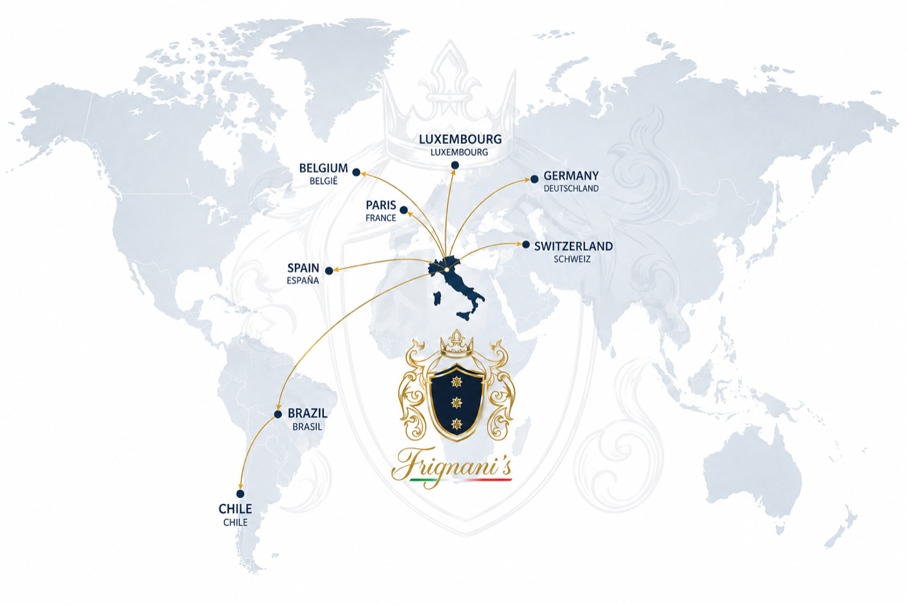

Uma herança italiana.
Uma história que atravessa gerações e continentes.
Origens italianas
Nas terras verdejantes do norte da Itália, na Emilia-Romagna, província de Ferrara, encontram-se as raízes da família Frignani. Uma região onde a tradição, a arte de viver e a excelência gastronômica fazem parte de um patrimônio cultural transmitido ao longo dos séculos.
Uma herança viva onde o respeito pela terra, os sabores autênticos e a dedicação ao ofício familiar moldaram um patrimônio transmitido com afeto e maestria, criando os alicerces de uma vocação que cruzaria oceanos.

Gentila Frignani
Le nostre radici, sempre nel cuore.
Valência, 1626
História europeia
Séculos de tradição nobreA história do nome Frignani, entretanto, ultrapassa as fronteiras italianas. Sua presença nos registros históricos europeus remonta a séculos anteriores, incluindo a criação da Baronia de Frignani e Frignestani, em 30 de agosto de 1626, em Valência, Espanha, durante o reinado de Filipe IV, concedida a Gaspar Palavicino y Centurión.
Travessia, 1891
Porto de Santa Cruz · Espírito Santo, BrasilEm 29 de setembro de 1891, um novo capítulo dessa história familiar começou quando nossos antepassados, vindos da Itália, desembarcaram no Porto de Santa Cruz, no Espírito Santo, Brasil. Trouxeram consigo suas tradições, seus valores, os sabores da terra natal e o espírito empreendedor que atravessaria gerações.
Imigração italiana
Vitória, Brasil
Novas gerações
Trajetória e visão internacionalMais de um século depois, em Vitória, Espírito Santo, Sabrina Frignani cresceu entre a herança cultural italiana e o dinamismo de uma cidade portuária conectada ao comércio internacional. Sua trajetória profissional entre o Brasil e a Europa, especialmente na Espanha, fortaleceu uma visão empresarial pautada pela excelência, pelo conhecimento de diferentes mercados e pela valorização das relações humanas.
Luxemburgo — Frignani's
Fotografia panorâmica + apresentação comercial

Hoje, a nova geração Frignani realiza simbolicamente o caminho de volta às suas origens europeias.
Com sede em Luxemburgo, no coração da Europa, nasce a Frignani’s Import & Export, unindo tradição italiana, experiência em gestão internacional e uma visão contemporânea de negócios.
Federazione Italiana Cuochi · Delegazione Lussemburgo
Com o apoio da Federazione Italiana Cuochi – Delegazione Lussemburgo, estabelecemos pontes entre produtores, marcas e mercados, promovendo produtos selecionados pela sua autenticidade, qualidade e excelência.
Mais do que importar e exportar, nossa missão é aproximar culturas, valorizar produtores e construir relações comerciais duradouras, oferecendo um serviço personalizado, criterioso e eficiente, da origem à entrega final.
Das Américas à Europa.
Da Europa para o mundo.
« Uma história de família. Uma tradição que permanece. Uma visão que ultrapassa fronteiras. »